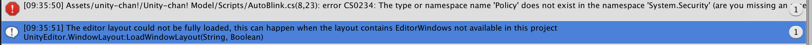
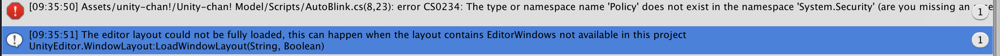

中途結果の報告
LOWPORIで孤島と海を作って歩き回ってみようとした
学習進捗
今回はUnityを使って、何か行ってみたい場所を作るという課題でした。
自分はlowporyの素材を使って何か作りたいということで孤島と海を作りましたが、上記動画のように何故か動かなくなってしまいました。

その後・・・
人物モデルのデータの一部をunityのターミナルを開いて消し他ところ、どうにか動くようになったため
何処かでつまりが発生していたようです
LOWPORIで孤島と海を作って歩き回ってみようとした
今回はUnityを使って、何か行ってみたい場所を作るという課題でした。
自分はlowporyの素材を使って何か作りたいということで孤島と海を作りましたが、上記動画のように何故か動かなくなってしまいました。

その後・・・
人物モデルのデータの一部をunityのターミナルを開いて消し他ところ、どうにか動くようになったため
何処かでつまりが発生していたようです